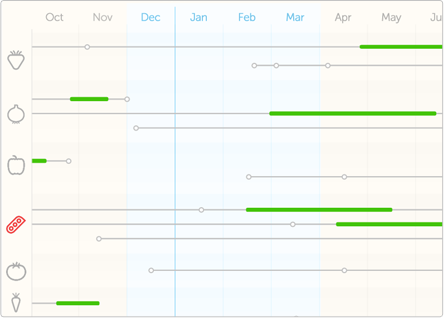

Sembr is a tool to help farmers and gardeners plan crops and track yields.
We’re gearing up to release an early prototype for your feedback. You can keep an eye on the blog for updates, and if you enter your email address below we’ll give you a shout when we’re ready!
White you're waiting...
...here's a micro-tour of what's germinating

Visualise your crops in style
Goodbye spreadsheets, we shalln’t miss you.
Sembr gives you a visual overview of all your crops so you always know what’s coming up.


Update quickly and naturally
Make notes of your actions, and let sembr crunch it into crop data.
With intelligent autocompletion and blueprints for your common planting schemes, you can spend less time getting data into sembr, and more time getting plants in the ground.